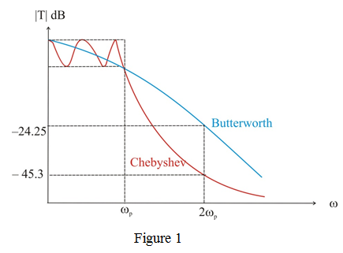

The parameter  which determines the maximum variation in passband transmission is,
which determines the maximum variation in passband transmission is,
The attenuation of the Butterworth filter at is,
Thus the attenuation provided by a fifth-order Butterworth filters is,
The parameter which determines the maximum variation in passband transmission is,
The attenuation of the Butterworth filter at is,
Thus the attenuation provided by a fifth-order Butterworth filters is,
The attenuation of the Chebyshev filter at is given by
Simplify further.
Thus the attenuation provided by a fifth-order Chebyshev is, .
The shape of  for the Chebyshev and Butterworth filters on the same axes is shown in Figure 1.
for the Chebyshev and Butterworth filters on the same axes is shown in Figure 1.
